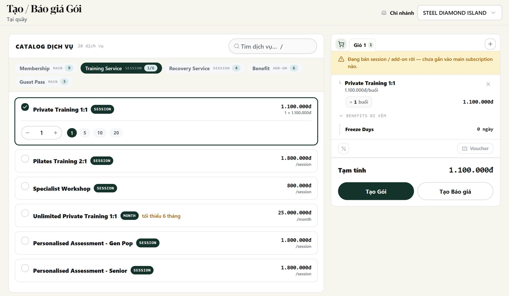
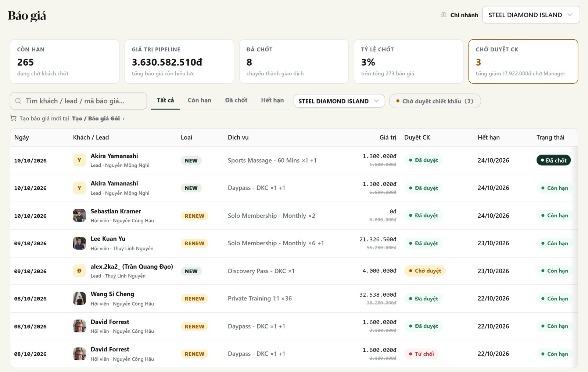
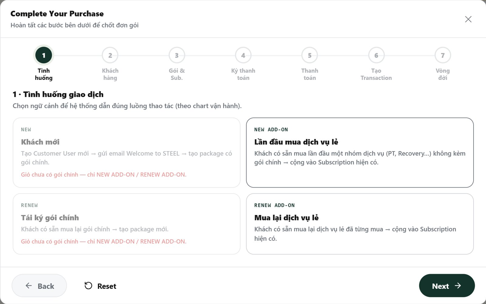
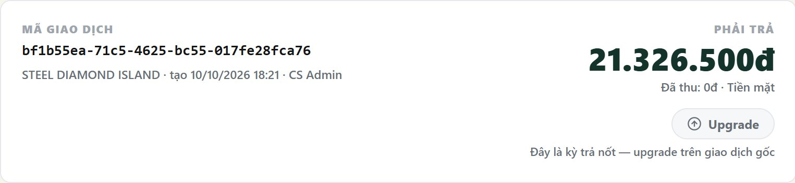
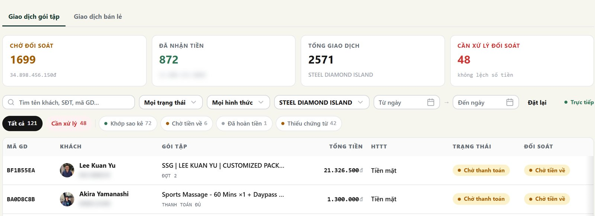

CS tạo gói và thu tiền qua wizard 7 bước. Sale tạo báo giá upgrade, Sale Manager duyệt, Kế toán xác nhận tiền ở Đối soát. Thu tiền theo từng kỳ: xem hướng dẫn Thanh toán.



Khách nâng gói đã mua; tiền đã trả được trừ, khách trả phần chênh lệch. Nút Upgrade chỉ Sale / Admin Manager thấy; CS làm bước tạo gói và thu tiền.

| Dòng chữ dưới nút | Làm gì |
|---|---|
| Quá 30 ngày kể từ ngày thanh toán (hết hạn …) | Không upgrade. Tư vấn gói mới / RENEW. |
| Giao dịch này đã được upgrade | Hết lượt. Tư vấn gói mới. |
| Giao dịch upgrade không được upgrade tiếp | Đây là giao dịch upgrade, không phải gốc. |
| Đây là kỳ trả nốt — upgrade trên giao dịch gốc | Mở giao dịch Đặt cọc / Đợt 1 của khách. |
| Giao dịch chưa có khoản thanh toán được xác nhận | Nhờ Kế toán xác nhận, rồi thử lại. |
| Giao dịch trả theo tháng không upgrade được … | Tạo subscription mới. |
| Đã có báo giá - Update ở trang Báo giá | Vào Báo giá → Tạo lại báo giá cũ (báo giá cũ bị lưu trữ). |
Mở menu Đối soát giao dịch → tìm theo tên / SĐT → mở giao dịch. Sau đó mở Khách hàng → hồ sơ khách.

| Chỗ xem | Đúng khi |
|---|---|
| Đối soát → Phải trả | Bằng Số tiền giao dịch ở bước 6 (= giá báo giá nếu tạo từ báo giá). |
| Kỳ thanh toán | Đúng kỳ đã chọn: Thanh toán đủ / Đặt cọc / Đợt 1 (50%) / Theo tháng. |
| Chiết khấu | Bằng % trên báo giá đã duyệt. Không có báo giá → không có chiết khấu. |
| Các khoản thanh toán | Đủ số dòng đã nhập; hình thức, số tiền, mã đối soát đúng. Tổng = Phải trả. |
| Đã thu | = 0đ trước khi kế toán xác nhận: bình thường. Sau xác nhận = Phải trả. |
| Subscription (badge) | Chỉ active sau khi giao dịch Received. Declined → suspended. |
| Khách hàng → card gói | Đúng loại gói, đúng club. Hiệu lực có ngày bắt đầu → kết thúc sau khi active. |
| Add-on | Dịch vụ nằm trong sub đã chọn ở bước 3, không sinh card gói mới. |
| Chỗ xem | Đúng khi |
|---|---|
| Báo giá upgrade | Khách trả thêm + Đã trả = Giá mới. Lệch → báo SM trước khi gửi khách. |
| Giao dịch upgrade → Phải trả | Bằng Khách trả thêm trên báo giá. Kỳ = Thanh toán đủ. |
| Subscription | Cùng sub với giao dịch gốc, không có sub mới. |
| Sau Received | Số buổi / thời hạn tăng đúng phần nâng. Buổi đã dùng + ngày bắt đầu giữ nguyên. |
| Giao dịch gốc | Dưới nút Upgrade hiện Giao dịch này đã được upgrade. |
| Báo giá | Nút Tạo Gói đã khoá (Báo giá đã gắn gói). |
| Cảnh báo Hoá đơn gốc chưa xác nhận đủ | Khoản ở giao dịch gốc còn chờ: Kế toán xác nhận khoản gốc trước. |